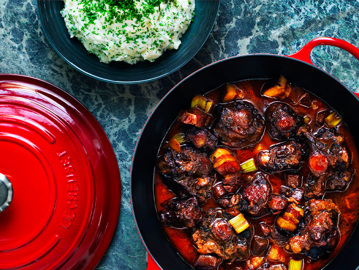
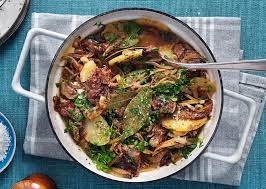
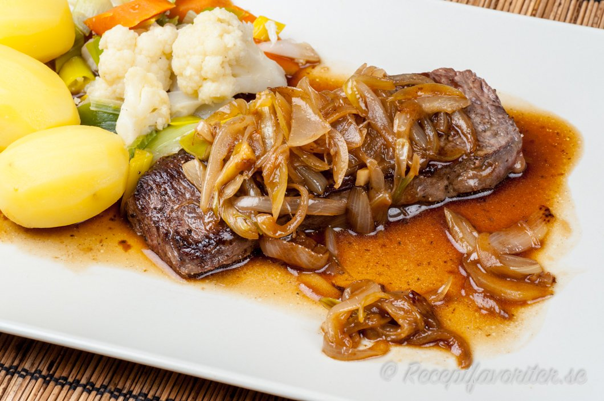

Kötträtter
Fransk Oxsvansgryta

Ingredienser
- 1 kg oxsvans
- 3 msk vetemjöl
- 2 msk smör
- 5 1/2 dl rött vin
- 1 dl oxfond alt 2 buljongtärningar i 4 dl kokt vatten
- 400 st morötter, skalade och skurna i 5 cm bitar
- 1 st burk krossade tomater, 400 gr
- 1 st stor gullök, hackad
- Färsk rosmarin
- Färsk timjan
- Salt och nymalen svartpeppar
Gör så här
- Torka av köttbitarna. Salta och peppra och mjöla dem runtom.
-
Hetta upp smöret i en rymlig gryta och bryn köttet runtom så de får
lite färg. Lägg köttbitarna på ett fat.
-
Hacka löken och fräs lätt ihop med morötterna i fettet som är kvar i
grytan i några minuter. Smaka av med salt och peppar.
-
Lägg tillbaka köttet i grytan. Häll i vin, fonden eller buljongen ,
krossade tomater, timjan och rosmarin.
-
Låt det sjuda på svag värme under lock i minst 3 timmar, tills
köttet släpper lätt från benet.
-
Servera med ugnsgrädda rotfrukter eller potatis eller surdegsbröd.
Sjömansbiff

Ingredienser
- 2 st gula lökar
- 800 g nötstek av fransyska
- 0,75 dl vetemjöl
- 1 tsk svartpeppar grovmald
- 1 tsk salt
- 2 msk smör
- 1,2 kg potatis fast
- 2 st lagerblad
- 0,5 tsk timjan torkad
- 4 dl vatten
- 1 st tärning mörk oxbuljong
- 4 dl mörkt öl
Gör så här
-
Strimla lökarna och stek dem på medelgod värme i en stekpanna med
smör tills de får lite färg. Ställ åt sidan.
-
Skär köttet i ca 1 cm tjocka skivor. Klipp upp en plastpåse och lägg
en skiva i taget mellan plast. Banka ut köttskivan något med t ex
botten av en kastrull om du inte har en riktig köttutplattare.
-
Blanda mjöl, peppar och salt i en bunke och lägg i köttet. Blanda om
ordentligt.
-
Bryn skivorna på båda sidor i het stekpanna med smör. Det räcker med
1/2 min på varje sida.
- Skala och skiva potatisarna tunt.
-
Varva potatis, brynt lök, brynta köttbitar, lagerblad och timjan i
en gryta. Det ska vara potatis underst och överst.
-
Värm vatten och buljongtärning tills buljongen löst sig. Häll det
samt öl i grytan och koka under lock ca 1 1/2 tim på låg värme.
-
Garnera med finhackad persilja och servera gärna med inlagd gurka
och eventuellt senap.
Biff med lök

Ingridienser
- 4 skivor utskuren biff
- 6 gula lökar
- 4 msk smör
- salt
- vitpeppar
- 0,5 dl köttbuljong
Till servering:
- potatis, tärnad råstekt
- persilja
Gör så här
-
Skala löken och skär den i hela, inte alltför tunna, ringar. Låt 1
msk smör bli ljusbrunt i en stekpanna. Stek löken på medelvärme ca 5
minuter tills den är glansig, ljusbrun, nätt och jämt genomstekt och
har spänsten kvar. Vänd ner 1 tsk salt och lägg över löken i en
skål.
-
Platta ut biffarna lätt med knytnäven eller flatsidan av en kniv.
Inte med något taggigt föremål. Salta och tag några tag med
vitpepparkvarn över biffarna. Låt 2 msk smör bli riktigt brunt i het
stekpanna. Bryn biffarna ca 1 minut på varje sida om du vill ha dem
rosa, ca 1 1/2 minut om du vill ha dem genomstekta. Lägg upp
biffarna på serveringsfat eller på fyra tallrikar. Slå bort det
brända smöret.
-
Låt ytterligare 1 msk smör bli gyllenbrunt på medelvärme. Lägg i
löken och låt den bli genomvarm. Häll på vatten och låt blandningen
puttra några ögonblick. Häll lökskyn över biffarna. Servera med
stekt potatis.